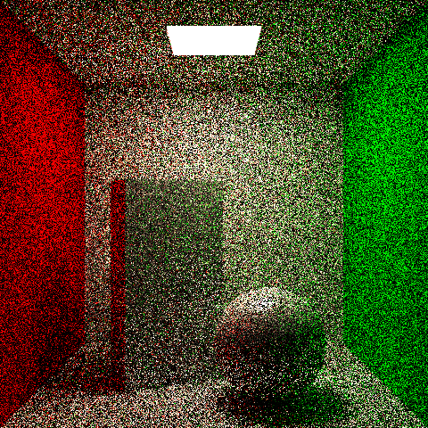
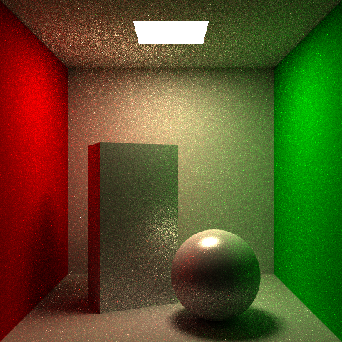
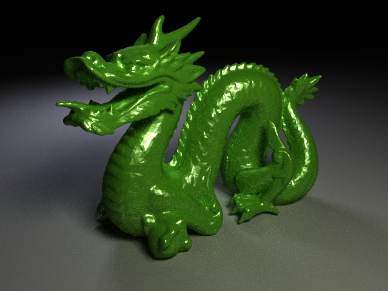
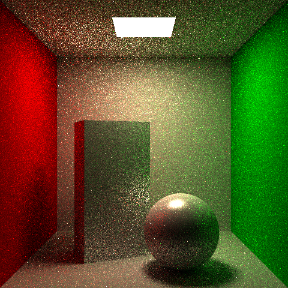
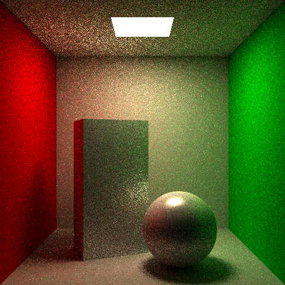
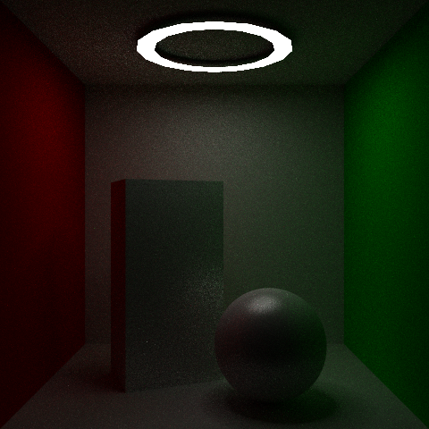
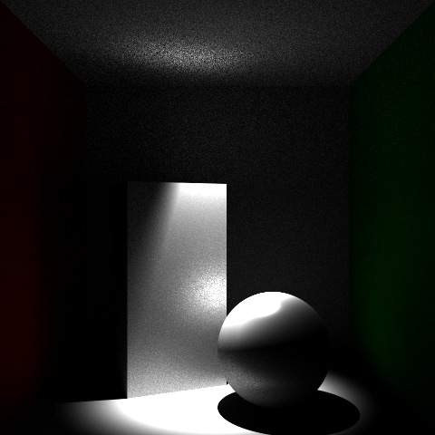

Path tracing with hemisphere sampling, next event estimation, and Russian roulette. Global illumination built on top of the HW2 direct lighting framework.
The base path tracer uniformly samples a random direction from the hemisphere at each bounce and traces up to a maximum depth. At 64 samples per pixel the estimator has converged enough to show correct indirect illumination: color bleeding on the walls, soft shadows, and a naturally lit ceiling though some residual noise is still visible in darker regions where paths rarely reach the light.

cornellSimple.test: path tracing, 64 sppNext event estimation (NEE) splits the rendering equation into direct and indirect components. At each surface intersection, the direct lighting estimator from HW2 explicitly samples the light source, so paths no longer need to stumble onto it by chance. Emission is accumulated only at the first intersection to avoid double-counting. Both images use 64 spp, the noise reduction from NEE is substantial.

With NEEFixed-depth path tracing introduces bias by hard-cutting paths at a maximum depth. Russian roulette instead probabilistically terminates paths at each bounce and boosts surviving paths by 1/(1-q) to maintain an unbiased estimator. Setting D=infinity removes the depth cap entirely: paths continue until Russian roulette kills them, allowing light from arbitrarily deep bounces to contribute. The result is subtly brighter in multi-bounce regions due to contributions from deeper bounces, though slightly noisier since some paths are terminated early trading the bias of a hard depth cutoff for an unbiased estimator with some added variance.

Dragon sceneIndirect rays are now sampled proportional to the cosine of the angle with the surface normal. This causes the PDF to cancel the cosine term in the Monte Carlo estimator, reducing the throughput multiplier from 2 * pi * f * cos(theta) to simply pi * f. Samples are concentrated where diffuse surfaces contribute most, reducing noise without introducing bias. Both images use 16 spp with NEE enabled, the noise reduction on the diffuse walls and floor is clearly visible.

Uniform hemisphere sampling, 16 spp
Cosine-weighted sampling, 16 sppA flat annular (ring-shaped) area light was implemented as an additional emitter type. Points are sampled uniformly over the annulus using inversion sampling,
where the sample radius is drawn as r = sqrt(u * (Ro^2 - Ri^2) + Ri^2) to maintain a correct uniform area distribution.
The flat ring shape produces a distinctive circular highlight on the ceiling and a soft annular shadow pattern that no quad or disk light can replicate.

ring light, 64 sppA point-based spot light was implemented as a directional emitter with a configurable cone angle and smooth quadratic falloff. Surfaces inside the inner cone receive full illumination while those between the inner and outer cone angles fade gradually to black via a quadratic falloff factor. Outside the outer cone, surfaces receive no contribution. A narrow cone produces a sharp theatrical pool of light on the floor with hard shadows, while widening it approaches a standard point light.

spot light, 512 spp